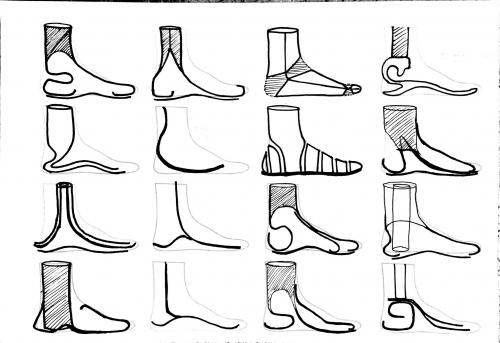

In developing countries the number of amputations is high due to bad public health and nutrition as well as accidents often caused by landmines. The amputation of the transtibial limb results in the loss of mobility which affects the quality of life and cause physical and psychological problems. These people cannot benefit from public health care and cannot afford high quality prosthetics and if recent trends and conflicts around the world will continue the number of amputations will increase. In order to bring back the mobility of amputated people and enable an independent life an affordable and functional solution is needed.
In January 2015 I travelled to Vietnam and Cambodia where I saw many victims from the Vietnam War who lost their limbs. I wanted to empower these people to live their lives independently and decided to work on the low-cost prosthesis project at Waag Society.
The goal of my internship was to develop a prosthetic foot for the low-cost prosthesis project which would increase the functionality of the current prosthesis.
I started by researching about the functional requirements and interviewed people to discover the demands of the target group towards a prosthetic foot and created a list of requirements that the foot has to fulfil.
Requirements
- - Lightweight (<1kg)
- - Low-cost (<50$)
- - Self-adjustable (adjustment of heel stiffness, size and shape)
- - Minimized perception and noticeability
- - Biomechanically appropriate (replicate natural gait)
- - Social and cultural appropriate (facilitate daily tasks of the users)
- - Wearable with shoes, slippers and barefoot
- - Suitable for local climate and environment in developing countries
- - Withstand high loads, forces and torques repeatedly
- - Made from local materials
- - Suitable for local production in a Fablab
- Target group
The initial low-cost prosthesis project was especially addressing amputated people in Indonesia but in order to serve a larger population we decided to focus on developing countries in general. For research reasons I decided to focus on three different areas and selected three representative countries (Cambodia, Afghanistan, Angola) which have a high number of transtibial amputations.
Material Research
The choice of material is important for the development and performance of a prosthetic foot. In order to resist the climate and harsh environments the material has to be resistant to high temperatures, UV and water. In addition it has to be lightweight, easy to machine and strong.
Looking at local available materials I decided to look into recycled materials since there. The approach of using locally sourced waste to produce a new product would add to a more sustainable life style. The materials researched revealed that hard PVC would be most suitable for this project since it can be found in all countries.
Idea generation
I started to look at existing prosthetic feet and compared their shapes and functions. Based on that I sketched ideas which could be modelled from PVC pipes.

The shape of the model has to be designed in a way that the foot would absorb shock at the heel and stores and returns energy while walking. Therefore the foot has to be sturdy to create balance but also be flexible to a certain degree to enable a natural roll-over curve of the foot.
I started with maing cardboard models to explore the mechanical properties.
Prototype 1
The first prototype was made from a PVC pipe ( 150 mm x 300mm x 1,5mm). I cut the PVC pipe into shape and used the hot air blower to bend the material.
The material was surprisingly easy to bend under heat influence and the foot compresses and acts like a spring but the prototype was too weak to resist body weight.
The Final Prototype
I decided to use a thicker PVC pipe and make a mold to get a cleaner bending curve. Since the material was too thick to bend it with the hot air blower I had to use the oven. The mold for the final prototype can either be made manually or by using the Milling machine.
- Material for the foot: 1 x PVC pipe ( 3mm x 250mm x 400mm) 2x PVC pipe ( 3mm x 40mm x 100mm)
Material for the mold: Wood plate (DIN A4 x 20mm) Wood pins 17 x (100mm x 5mm)
1. The manual Mold
2. The Shopbot mold

This work is licensed under a Attribution Non-commercial Share Alike Creative Commons license